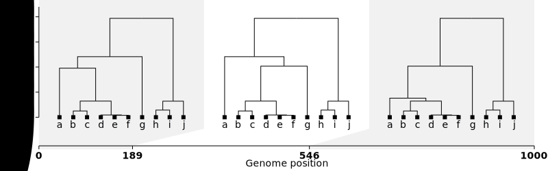

Mar 7, 2025
We condition on the sample’s ancestral recombination graph (ARG)
The full feature of the ARG is superfluous, only the local trees matter \(\mathcal{T} = (\mathbf{V}, \mathbf{E})\) 
Drift and recombination are fixed, only mutation is left to vary \[ \mathbf{y} \mid \mathcal{T} \; \sim \; ? \]
Figure from tskit docs
The trait \(\mathbf{y}\) is a linear function of the genotype \(\mathbf{G}\) \[ \mathbf{y} = \mathbf{G}\boldsymbol{\beta} + \boldsymbol{\varepsilon} \] \(\mathbf{y} \in \mathbb{R}^N\), \(\mathbf{G} \in \mathbb{R}^{N \times P}\), \(\boldsymbol{\beta} \in \mathbb{R}^P\), and \(\boldsymbol{\varepsilon} \in \mathbb{R}^N\)
Recall \(\mathbf{G}_p = \sum_{e:p \in e} \mathbf{Z}_{e} \mathbf{1}_{ep}\) \[ \begin{aligned} \mathbf{y} &= \sum_{p=1}^P \mathbf{G}_p \boldsymbol{\beta}_p + \boldsymbol{\varepsilon} = \textcolor{grey}{\sum_{p=1}^P \sum_{e:p \in e}} \mathbf{Z}_e \boldsymbol{\beta}_p \mathbf{1}_{ep} + \boldsymbol{\varepsilon} \\ &= \textcolor{red}{\sum_{e=1}^E \sum_{p:p \in e}} \mathbf{Z}_e \boldsymbol{\beta}_p \mathbf{1}_{ep} + \boldsymbol{\varepsilon} = \sum_{e=1}^E \mathbf{Z}_e \textcolor{blue}{\left(\sum_{p:p\in e} \boldsymbol{\beta}_p \mathbf{1}_{ep} \right)} + \boldsymbol{\varepsilon} \\ &= \sum_{e=1}^E \mathbf{Z}_e \textcolor{blue}{\boldsymbol{\upsilon}_e} + \boldsymbol{\varepsilon} = \mathbf{Z} \boldsymbol{\upsilon} + \boldsymbol{\varepsilon} \end{aligned} \]
\(\boldsymbol{\upsilon}\) is a random variable made up of mutation-driven random variables \(\mathbf{1}_{ep}\)!
Split \(\boldsymbol{\upsilon}\) to \(\mathbf{u} = \boldsymbol{\upsilon} - \mathrm{E}\boldsymbol{\upsilon}\) and \(\mathbf{f}= \mathrm{E}\boldsymbol{\upsilon}\)
\[ \mathbf{y} = \mathbf{Z} \mathbf{u} + \mathbf{Z} \mathbf{f} + \boldsymbol{\varepsilon} \]
Let’s characterize \(\mathbf{u}\) (the random effects) and \(\mathbf{f}\) (the fixed effects)
Independent entries of random effects a key assumption of linear mixed models
This can be proved in ARG-LMM, instead of assuming it \[ \mathrm{Cov}( \mathbf{u}_e, \mathbf{u}_{e'} ) = \sum_{p \in e,e'} \boldsymbol{\beta}_p^2 \mathrm{Cov}(\mathbf{1}_{ep}, \mathbf{1}_{e'p}) \]
The covariance between the indicators are higher-order terms of mutation rates, so we ignore it (Wakeley 2008) \[ \begin{aligned} \mathrm{Cov}(\mathbf{1}_{ep}, \mathbf{1}_{e'p}) &= \mathrm{E}[\mathbf{1}_{ep}\mathbf{1}_{e'p}] - \mathrm{E}[\mathbf{1}_{e'p}]\mathrm{E}[\mathbf{1}_{ep}] \\ &= 0 -l_eu_{ep}l_{e'}u_{e'p} \approx 0 \end{aligned} \] where \(l_e\) is the (time-)length of edge \(e\).
The Gaussian prior on random effects is a popular choice
One might be tempted to invoke the central limit theorem to \(\mathbf{u}_e\) (sum of indicators) \[ \mathbf{u}_e \bigg/ \sqrt{l_e s_e} \cdot \sqrt{ \frac{1}{s_e} \sum_{p:p \in e} \boldsymbol{\beta}_p^2 u_{ep} } \rightarrow N(0,1^2) \text{ as } s_e \rightarrow \infty \] where \(s_e\) is the span (in base pairs) of edge \(e\)
The convergence is unlikely to be fast enough given the small value of \(\mathbf{E}[\mathbf{1}_{ep}]\) (Berry-Esseen).
Fortunately, the variance is computable and is \[ \mathrm{Var}(\mathbf{u}_e) = l_e s_e \cdot \frac{1}{s_e} \sum_{p:p \in e} \boldsymbol{\beta}_p^2 u_{ep} \]
Suppose that \(u_{ep}=u_p\), i.e., the mutation rate is constant across edges for a given position \[ \begin{aligned} \left[ \mathbf{Z} \mathbf{f} \right]_n &= \sum_{e=1}^E \mathbf{Z}_{ne} \mathbf{E} \left[ \sum_{p: p \in e} \boldsymbol{\beta}\mathbf{1}_{ep} \right] \\ &= \sum_{p=1}^P \boldsymbol{\beta}_p u_p \left( \sum_{e: p \in e} \mathbf{Z}_{ne} l_e \right) \\ &= \sum_{p=1}^P \boldsymbol{\beta}u_p \cdot 2t_{\mathrm{root},p} = \text{const. resp. to $n$} \end{aligned} \]
An intercept is enought to account for the fixed effects \(\mathbf{Z}\mathbf{f}\) under this condition
The assumption is standard in neutral settings \[ \text{Selection \quad \Rightarrow \quad Fixed effects?} \]